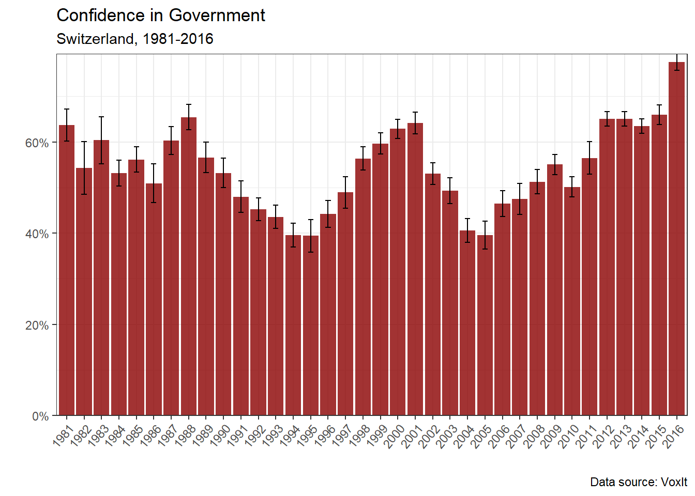

1.1 The Swiss model under pressure
Switzerland represents an interesting case study for the analysis of institutional change. Despite some widespread stereotypes, such as the supposed slowness and rigidity of the Swiss political system due to the multiple veto points allowed through direct democracy, the country underwent important institutional, economic, as well as political change in the last decades. The Swiss model of capitalism is also difficult to classify in the Varieties of Capitalism (VoC) framework. At first glance, Switzerland appears to be a very liberal and open economy, but Hall and Soskice (2001) famously ranked Switzerland among the coordinated market economies (CMEs).
In Capitalism against Capitalism, a book which, before Hall and Soskice and the VoC literature, already described two competing models of capitalism, Michel Albert (2009) underlined the many peculiarities of the Swiss model, that he, at first glance, thought of as “the very incarnation of liberal economic philosophy and laissez-faire capitalism” (Albert 2009, 131). The author recounts how, during a visit to Switzerland, he learned to his surprise that the Swiss insurance and financial systems were highly regulated. His personal confrontation to the Swiss model made him realize that he was “discovering a new form of capitalism in which the price tag, the material aspect of a product, was secondary to the service being offered, in other words, the whole web of non-material, subjective, even emotional factors woven into the product.” (Albert 2009, 132). This new form of capitalism, that he named the Rhine model or Alpine capitalism (which includes Germany, Switzerland, Austria or even Japan) represented an alternative system to the neo-American model. Unlike Hall and Soskice, who stressed that CMEs and LMEs produced similar economic performance and should diverge by following their own specific paths, Albert argued that, despite the economic and social superiority of the Rhine model, the latter ran the risk of gradual conversion to the neo-American model (Albert 2009).
Despite the structural weakness of the Swiss federal state, the weakness of labor unions and the predominance of business interests, Switzerland’s economy indeed developed various non-market and non-competitive coordination mechanisms throughout the 20th century, which go even beyond the regulated insurance and financial systems which surprised Albert so much. One can think of, for instance, the cartelization of major Swiss industries which was actively supported by the state through public subsidies in the interwar period (see Boillat 2011 for the case of the Swiss watch industry) or the late creation and expansion of the Swiss welfare state after the Second World war, even though the latter remains small compared to other welfare state regimes (Obinger 1998). Swiss corporate governance also displayed strong differences from a market-based, shareholder-oriented system which typically prevails in Anglo-Saxon countries. Until the mid-1980s, Swiss corporate governance was an “insider-oriented” type of system characterized by self-regulation by private actors with minimal legal framework, “selective protectionism” (Vinkulierung) in favor of Swiss shareholders and blockholders and strong cooperation between business actors, associations and networks (Mach et al. 2007).
According to Katzenstein (1985), small European states like Switzerland were likely to develop such coordinated and corporatist institutions and thus form a particular type of capitalism different from the liberal model of Great-Britain and the US and from the statist model of France and Japan. In fact, small domestic markets, international competitive pressure and the economy’s dual structure of small states make the latter likely to develop into a “democratic corporatism” type of capitalism. But among democratic corporatism systems, Katzenstein still stressed that Switzerland could be classified as a “liberal variant” due to weak labor unions and the dominance of employer’s associations.
Therefore, Swiss capitalism represents a peculiar case with both liberal and non-liberal institutions: weak labor union density and strong business side; labor market flexibility and weak state intervention are all features that could sort the Swiss case into the “liberal market economy” type of capitalism (LMEs). The uniqueness of the Swiss model, which combined both strong liberal and coordinated elements, led Trampusch and Mach (2011) to talk about the “Swiss hybrid model” (SHM).
However, since the global neoliberal turn of the late 20th, the SHM is under pressure and is gradually mutating into a neoliberal type of capitalism (Trampusch and Mach 2011). The so-called “structural reforms” advocated by international organizations such as the OECD, but also promoted internally by various Swiss actors, led to subsequent waves of neoliberal reforms in almost all institutional areas. In the early 90s, the Swiss government launched the so-called economic revitalization program, largely influenced by publications from neoliberal Swiss economists such as David de Pury and representatives from the big internationalized corporations. The revitalization program’s objectives were to improve the competitiveness of the Swiss economy by increasing competition in the domestic market and by liberalizing and privatizing the public sector. One of the main reforms was the Cartel Law of 1995, which created a competition commission (ComCo), reduced anti-competitive practices and the power of Swiss cartels. Some public sectors such as the telecom sector were liberalized and privatized: Postes, téléphones, télégraphes was for example partially privatized after the creation of Swisscom in 1998 (Mach, Häusermann, and Papadopoulos 2003).
Regarding the liberalization of corporate governance, the Stock Corporation law of 1991 and the Federal Act on Stock Exchange and Securities Trading (SESTA) of 1995, by strengthening minority and foreign shareholder rights, strongly liberalized the so-called “Forteresse des Alpes” (“Alps Fortress”), a metaphor used by the international finance community to illustrate the protectionist Swiss financial system (David, Mach, and Schnyder 2015). The trade unions crisis of the 1990s facilitated further the reconsideration of collective labor agreements such as wage indexation schemes.
The neoliberal transformation of the Swiss socio-economic model is thus underway, but remains nonetheless far from complete. Trade unions and the Swiss left were partially successful in blocking some of the reforms through referendum. As such, the privatization of the energy sector met some resistance since the law on the electricity market was rejected through popular vote in 2002. The future of the Swiss energy sector, which remains partly public, is subject to heated debates given the deterioration of international context since the Covid crisis and the war in Ukraine1. Other reforms directed towards labor market flexibility (1996), reducing pension rights (1996) and unemployment benefits (1997) also were blocked through referendum. Unions were particularly successful to compromise through the bilateral negotiations with the European Union (EU) and various “flanking measures” were adopted in exchange of unions’ support for Bilateral treaties (Oesch 2011).
As a result, the Swiss advocates of neoliberalism are still unsatisfied with the progress of the reforms and are keen on underlying the remaining rigidities of the Swiss Hybrid Model. In that respect, Gerhard Schwarz, director of the neoliberal think tank Avenir Suisse between 2011 and 2015, and one of the authors, with David de Pury, of the so-called “white books”, which were manifesto promoting a neoliberal transformation of the Swiss model in the 1990s (Leutwiler et al. 1991; Hauser et al. 1996), declared in 2015:
“It is absurd to believe that we live in a liberal society. The Swiss politico-economic system is mixed, as evidenced by the share of the state, compulsory levy, of 40%. The production of norms and reglementations grows exponentially. I am always surprised by the amount of people who still believe that we are in a neoliberal world. This is a fake news. The size of the state grows and the autonomony of the individual declines.” (“Gerhard Schwarz: «Une Suisse néolibérale? C’est une «fake news» - Le Temps” 2019, author’s translation)
On the other hand, the OECD still underlines the “barriers to free trade and competition in the domestic market” and the overdue of the pension reforms (OECD 2022, 12). For several years now, neoliberals have persisted with the idea that Switzerland is treading water when it comes to structural reforms, and that this immobility could well mark the end of the country’s advantageous and privileged position. Nicolas Jutzet, liberal activist and project manager in the Institut Liberté (Liberal Institute) and co-creator of the media Liber-thé, deplores this supposed “wait-and-see” attitude, which he believes is the consequence of the erosion of the Swiss “militia spirit”, the professionalization of Swiss politics and the increasing recurrence of social movements that threaten private property, freedom and trade as well as of individual responsibility (Jutzet 2023).
1.2 Research question, theoretical framework and plan
The extent to which the Swiss model will complete its mutation towards a neoliberal model represents thus a fundamental economic, political and institutional issue for the years to come. A thorough and non-normative analysis of the path taken by the Swiss model since the crisis of the 1990s is thus duly needed and is behind the motivation of the present paper. What kind of social base made this neoliberal transformation of the Swiss socio-economic model possible? Is this social base stable enough to complete this transformation? A way to answer these questions is to explore the extent to which the formation of social blocs are influenced by different factors: socio-economic characteristics, institutions or even political mediation. The scope of the present analysis will be limited to the identification of the main Swiss social blocs and the extent to which their composition and evolution are influenced by socio-economic characteristics. The first part will conduct a long-term analysis of voting outcomes for the main Swiss political parties, political leaning and for a set of political cleavages, with a special focus on income and educational levels. Then, the second part will present the results of a latent class analysis (LCA) of the Swiss socio-political groups in the late 90s.
The aim of this essay is to conduct an analysis which would constitute a first step into a broader and comprehensive investigation of the political economy of institutional change in Switzerland. Far from the normative approach of mainstream economics, in which structural reforms simply constitute the sole and evident path towards its ideal model of perfect competition purged from rigidities, the methods and theory employed here are extensively based on the political economy of institutional change developed by Amable and Palombarini: the neorealist approach (Amable and Palombarini 2005, 2008).
1.2.1 Theoretical framework and concept definitions
The point of departure of the neorealist approach is the fundamental diversity of social expectations coming from the heterogeneity of the social structure. This diversity leads to a wide variety of social interests which are in perpetual contradiction and discord. Societies are thus characterized by a fundamental social conflict, which cannot be forever resolved but only temporarily regulated through the interaction between three spheres of social regulations: ideology, institutions and political mediation (Amable and Palombarini 2023).
Common socio-economic characteristics define socio-economic groups, which only partially translate into socio-political groups. The latter are groups which gather individuals sharing common social expectation regarding public policies and the desired socio-economic model. Regarding the relationships between socio-economic and socio-political groups, neorealism avoids the pitfalls of economic determinism. On the one hand, socio-demographic characteristics and hence socio-economic groups are partly captured by socio-political groups: agents with, for instance, low income level have more incentive to be in favour of pro-redistribution policies. However, they may not be in favor of redistribution if they are culturally persuaded by the dominant ideology to not follow their economic interests. Ideology thus mediates the translation of economic interests into explicit social demand. On the other hand, political mediation represents political strategies aimed at gathering socio-political groups into social blocs, which are thus never strictly homogeneous (Amable 2021).
Finally, social blocs compete in the political sphere with the objective to influence public policy towards the satisfaction of their social demands. A social bloc whose main demands are met and favored by public decision-making is the dominant social bloc (DSB). Social blocs whose demands are not favored by public policy are excluded from the DSB. In the neorealist framework, a political crisis corresponds to the collapse or destabilization of the DSB. Conversely, a stable existence of a DSB corresponds to a situation of political equilibrium. If the break-up of the DSB persists in time and no political strategy is successful in aggregating a new DSB, the crisis becomes systemic (Amable 2003; Amable and Palombarini 2005, 2008, 2023). The concept of political equilibrium should not let the reader think that the existence of a DSB leads to an unchanging stable situation. Moreover, periods of systemic crises can persist in time and last several decades, as in France (Amable 2017). The contrasts between Italy and France and the one side, and Switzerland on the other in terms of socio-economic and political institutions and political stability make the latter particularly interesting for the neorealist approach.
1.2.2 Switzerland: an interesting case study for the neorealist approach
For the analysis of social blocs and institutional change, Switzerland represents an interesting case study. The country is very different from France and Italy in terms of institutional and political institutions. Moreover, relative to Italy and France, which underwent deep periods of political and systemic crises in the last decades, Switzerland’s political stability stands rather remarkably. This stability should, at first sight, not constitute a surprise: Switzerland ranks consistently top among the best performing economies in a wide variety of socio-economic indicators: GDP per capita, Human Living Index (HDI), or even the Economic Complexity Index (ECI)2. Switzerland’s success and stability are often associated with the particularities of the country’s political institutions.
For instance, in Lijphart’s famous patterns of democracy, Switzerland stands out as the best example of consensus democracy, which is characterized by a proportional and diffuse distribution of political power, as opposed to the majoritarian system which tends to concentrate political power in the hands of the majority3. Lijphart explicitly argued that consensus democracies outperform majoritarian democracies in terms of governance, political stability and economic performance (Lijphart 2012). Further studies have nonetheless shown that the extreme Swiss case of consensus democracy is slightly becoming an average consensual democracy, due to growing political polarization (associated with the rise of the Swiss People’s Party), deregulation in industrial relations and diminishing cooperation between political actors (Vatter 2008).
If one considers confidence in government as a good indicator of political stability, and if one looks at the data provided by the OECD on that matter, Switzerland indeed stands out as one of the most stable countries in the OECD.
Figure 1.1 shows political stability as measured by the share of respondents who declared having trust in national government in a sample of OECD countries from 2006 to 2022. Switzerland shows the highest level of trust among the countries shown in the figure. Swiss trust in government shows an upward trend since 2009 and the share of Swiss respondents declaring trust in government is consistently equal or above 80% since 2016. This stands in sharp contrast with Italy, France or the US, which show low level of trust. The latter can be interpreted as a reflection of the persistent political crisis in which France and Italy are plunged. The origins of the Italian crisis goes back to 1992 after the break-up of the country’s DSB. The latter was constituted by large industrial firms, small firms and their employees, classes linked to rent and transfers and assisted classes whereas large firms’ employees were excluded from the DSB. The existence of this DSB was made possible by public debt growth and high interest rates which satisfied the main policy demands of large industrial firms and small businesses (active industrial policy through public debt and not taxation) as well as assisted classes and classes dependent on rent. However, as globalization and European integration put constraints on public debt growth in Italy, and as high interest rates reduced external competitiveness, this DSB collapsed due to the polarization of interests between large and small firms on the one side, and assisted classes, bureaucrats, classes linked to rent and transfers on the other side. (Palombarini 2001).
In France, the crisis intensified with the instability of the traditional left and right blocs, which used to govern alternately since the post-war period. The left bloc was constituted by the working class and the majority of public sector employees whereas the right bloc gathered self-employed, skilled, semi-skilled and white collars workers from the private sector, and farmers. The destabilization of the left and right blocs was the result of multiple factors such the relative decline of the working class, the economic crisis of the 1970s and European integration. The latter played a decisive role in the division of the left bloc between its neoliberal components, in favor of European integration as a tool to promote structural reforms in France, and its socialist branch still in favor of social and labor protection and state intervention (Amable, Guillaud, and Palombarini 2012; Amable and Palombarini 2014).
Since the break-up of the DSB in France and Italy, both countries experienced successive attempts by political leaders to carry a neoliberal project, with mixed results. These attempts failed at first during the 2000s and 2010s. In France, Chirac and then Sarkozy presidencies were unable to implement a complete neoliberal transformation of the French socio-economic model due to the resistance of the popular components of the right bloc. In Italy, Berlusconi failed due to similar reasons. However, the political strategy carried in France by Hollande and then Macron, which aimed to explicitly disregard the social expectations of the popular groups of the left bloc and extend the coalition to the center, by adopting a clear-cut neoliberal and pro-EU agenda, was successful in aggregating a new social bloc, the bloc bourgeois, uniting the wealthiest and most educated groups of both the left and right blocs, which is nonetheless unstable and fragile because of its restricted size (Amable, Guillaud, and Palombarini 2012; Amable and Palombarini 2018).
However, other data sources show a more contrasted picture of Switzerland’s political stability. The VOX studies, which conducted post-ballot surveys after each referendum voting session, were harmonized in a cumulative dataset which offer long-run data from 1981 to 2016 (Hardmeier et al. 2022). A similar figure as Figure 1.1 can thus be made with a precise focus on Switzerland:

Figure 1.2 shows that Switzerland underwent contrasted periods of political stability and crises in the last decades. A first period ranging from 1981 to 1987 was rather stable despite some variation in trust. Figure 1.2 also depicts well the crisis of the 90s, which constitutes the most turbulent period in Switzerland’s contemporary history. The crisis of the 1990s can be seen with the fall in trust from 65% in 1987 to a historical low level of 39% of Swiss respondents who declared to not have confidence in the federal government in 1995, three years after the rejection of the referendum for the adhesion to the European Economic Area (EEC). Swiss journalists, political observers, activist and scholars wrote extensively on this period which constitutes a rare case of deep political and economic crisis.
Brunner and Sgier (1997) show that Swiss citizens lost a great deal of confidence in the government, the national parliament and their members during the 90s. This loss of confidence was accompanied by a loss of attachment to the nation and to the Swiss sense of identity, and a growing attachment to local authorities and communal institutions. Widmer and De Carlo (2010) draw similar conclusions, but also showed that this period marked a turning-point in the evolution of trusting behaviors: due to cohort dynamics, trust in institutions declined while interpersonal trust rose in the three waves of World Values Survey analyzed by the authors (1989, 1996, 2007).
José Ribeaud, famous journalist who was one of the first Swiss television presenters, published the dramatically untitled book When Switzerland will disappear (Quand la Suisse Disparaîtra) in 1998. Journalists like José Ribeaud or Pietro Boschetti generally emphasize the multiple political scandals that happened during the 1990s. The first scandal was the resignation of the Radical Elisabeth Kopp from the federal council, in which she was the very first woman member, after she secretly tried to protect her husband from judiciary investigations. The “secret files scandal” happened the same year: the mass system of surveillance of the federal authorities was revealed to the Swiss public. The “secret files scandal” revealed that one twentieth of Swiss citizen and one third of foreign residents were recorded in the public authorities’ files. Last but not least, the dormant fund affair also broke out in 1995 and led to the Eizenstat report (1997) and the Bergier commission (1996), which strongly called into question the moral attitude and neutrality of Switzerland during World War II (Ribeaud 1998; Boschetti 2007).
The political crisis of the 90s was preceded by a severe economic crisis. The stock market crash of October 1987 and the Gulf crisis of 1990-91 ended the longest post-war expansion of the Swiss economy which lasted from 1976 to 1981. The Gulf crisis provoked an inflationary shock which led the Swiss National Bank (SNB) to raise the policy rate. The Swiss economy entered into recession in 1991 and economic stagnation persisted throughout the 1990s. This crisis, along with the crisis of the 1970s, marked the return of unemployment in Switzerland, which had disappeared during the post-war period, mainly because the country used to “export” a discriminated foreign labor force, a strategy which became impossible after crises of the 70s and 90s (OECD 1992).
Does the political and economic crisis of the 1990s constitute the sole period of instability in Switzerland? Figure 1.2 suggests that the early 2000s also represent a period of confidence crisis, as shown by the decline in trust from 2001 to 2005. The global 2001 recession which affected Switzerland surely played a role, but also various political and business events such as the bankruptcy of Swisswair (2001). The results of the 2003 federal election also profoundly disturbed the Swiss political scene: the Swiss People’s Party (UDC) became the first party of Switzerland and gained another seat in the federal council at the expense of the Christian Democratic People’s Party of Switzerland (PDC). Nonetheless, the upward trend in trust since 2005, which seems to be only slightly affected by the 2007 crisis and the following eurozone crisis, suggests that there is no notable confidence crisis since the 90s and early 2000s.
In view of the results shown in Figure 1.2, can the confidence crises of the 90s and early 2000s be interpreted as political crises in the sense given by the neorealist approach? A loss in confidence is not always synonym of political crisis if there is no break-up of the dominant social bloc. To answer this question, we thus need to, as a first step, identify what are the main Swiss social blocs and, secondly, assess their evolution in the last decades.
Until now, neorealism has been first and foremost applied to Italy and France. The present contribution seeks to expand the scope to the Swiss case by focusing on the links between political cleavages, the formation and evolution of social blocs, and socio-economic factors such as income and education.
The research and analysis proposed here are new for the following reasons. First, the present research is, to the author’s knowledge, the first to apply neorealist methodology and conceptual framework to Switzerland. Second, a long-term analysis of voting outcomes using post-voting survey data such as VoxIt has never been done in the literature, one possible reason being that researchers tend to focus more on post-election survey data. Last, this research is the first to conduct LCA using Swiss post-election survey data.
The next section traces a short history of the Swiss social blocs. Then, the results from a series of regressions to analyze their evolution since the 1980s and test several hypotheses concerning the social bases of the transformation of political cleavages and party support are presented. Finally, the results from a latent class analysis using post-election survey data for 1999 are presented.
See for example the “seven good reasons” to privatize the electricity sector by the neoliberal Swiss think thank Avenir Suisse (Grünenfelder 2022).↩︎
In 2018, Switzerland ranks third in terms of GDP per capita corrected for purchasing power parity among OECD countries (OECD 2019, 14). Switzerland had also the highest HDI in 2021 (Nations 2022, 272) and the second highest ECI in 2021 (“Country Rankings OEC. OEC - the Observatory of Economic Complexity” n.d.).↩︎
Lijphart described Switzerland as the “clearest consensual prototype” (Lijphart 2012, 245). Among all the criteria chosen in the author’s typology, only the Swiss system of judicial review did not correspond to the consensual system.↩︎